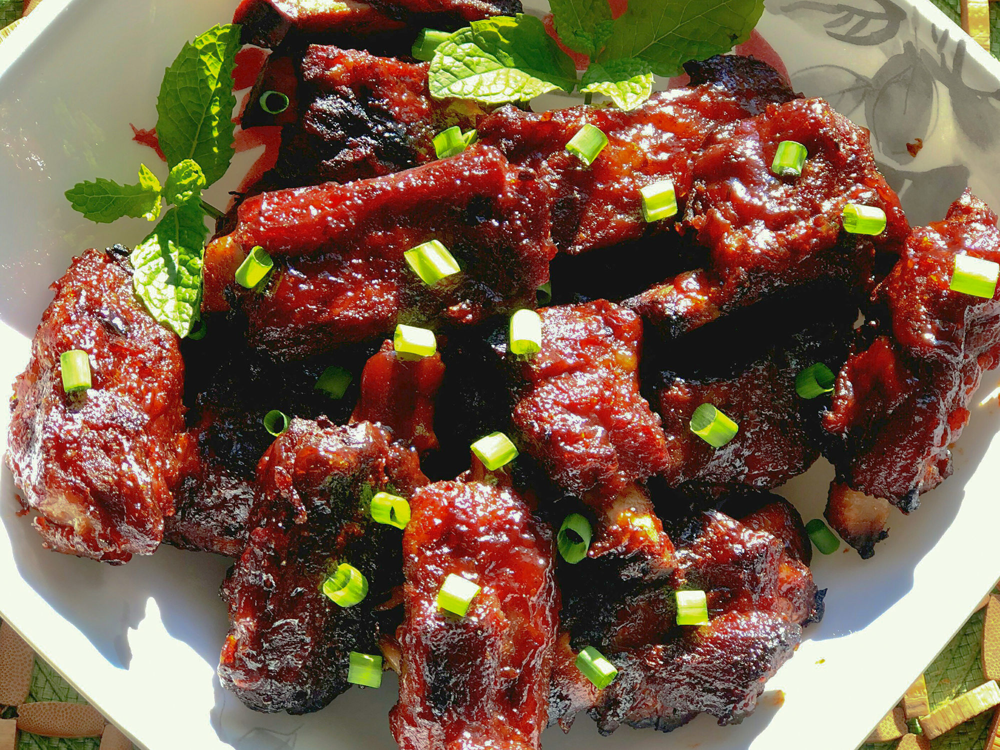

Slow Cooker Pork Rib Tips

Ingredients
- 2 tablespoons brown sugar
- 1 tablespoon chili powder
- 1 teaspoon salt
- 1 teaspoon ground black pepper
- 1 teaspoon garlic powder
- 1 teaspoon onion powder
- 1 pound pork rip tips
- 1 (18 ounce) bottle BBQ sauce, divided
- 1 tablespoon liquid smoke flavoring
Direction
- Mix brown sugar, chili powder, salt, pepper, garlic powder, and onion powder in a small bowl. Rub each rib with dry rub mixture until thoroughly coated. Let rest for 10 minutes.
- Mix BBQ sauce and liquid smoke until well combined.
- Place ribs in the slow cooker and pour BBQ sauce mixture evenly over ribs.
- Cook on Low until ribs are tender, 4 to 6 hours.
- Set an oven rack about 6 inches from the heat source and preheat the oven's broiler.
- Remove ribs from the slow cooker and baste with remaining BBQ sauce.
- Broil ribs in the preheated oven for 3 to 5 minutes on each side.
Nutrition Facts
Per Serving:
453 calories; protein 14.9g; carbohydrates 54.7g; fat 19.1g; cholesterol 59.9mg; sodium 2060mg.
Check out some other cool recipes!
Return to Homepage